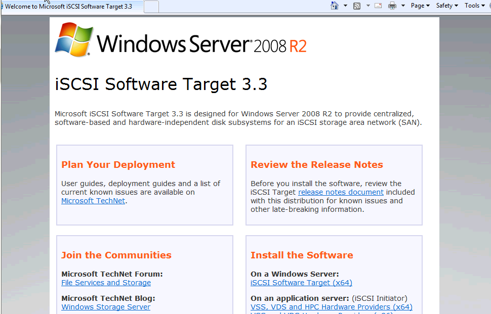
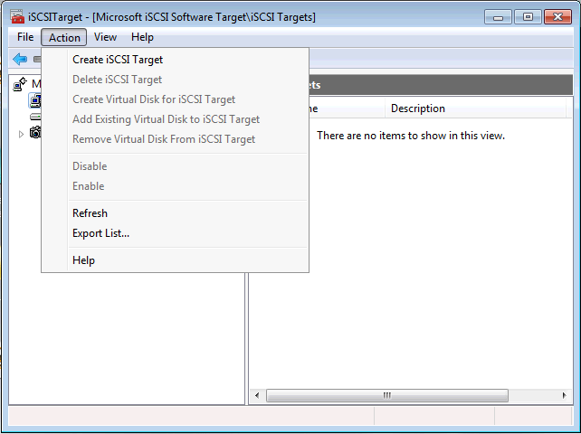
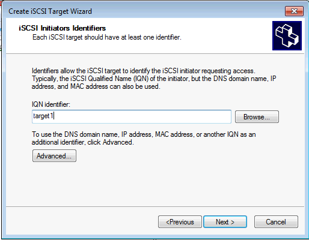
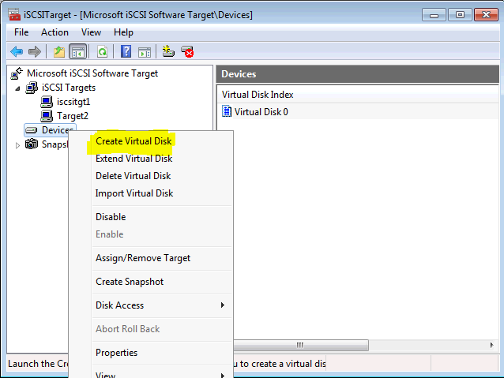
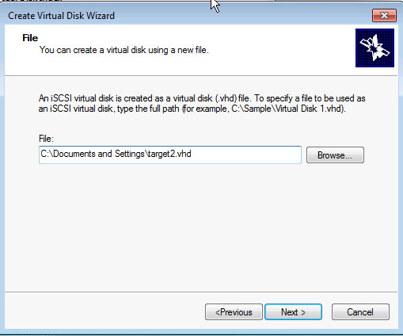

Installation
Get the free Microsoft iSCSI Target (TechNet blogs) and start the installer.

{kind=link}
Once completed, you'll get prompted with a screen where you should clin on "iSCSI Software Target (x64)".
Follow the easy wizard. Accept the license agreement, select installation path, and opt-in to the customer experience program. Just read and click next.
{kind=link}
You can start the iSCSI target on the Win Serv 2008 R2.
{kind=link}
the Microsoft iSCSI Software Target is installed under Admin Tools.
Setup
Create a Target. Enter the wizard

{kind=link}
Supply an iSCSI target name and description. helps keep things clear. After this, set the IQN.

{kind=link}
We now need to point the target to a disk. For this, create a new virtual disk (or import one).

{kind=link}
New wizard. Define a path. browse to the path on the host system and then type the name in a "name.vhd" format. Then, assign a size to the vhd.

{kind=link}
with a target and virtual disk : need to link the two. In access screen, click add and then link the VHD and iSCI target.